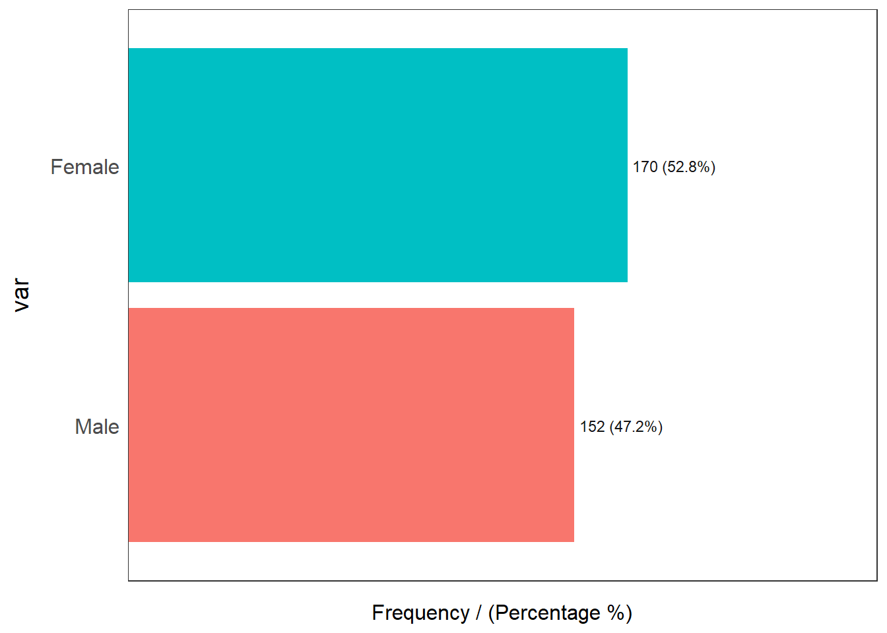

pacman::p_load(ggstatsplot, tidyverse) Visual Statistical Analysis
Hands-on Exercise 4.1 : Fundamentals of Visual Analytics
1. OVERVIEW
This study explores visual statistical analysis with :
ggstatsplot package to create visual graphics with rich statistical information.
performance package to visualise model diagnostics.
parameters package to visualise model parameters.
2. R PACKAGE REQUIRED
2.1 Load R Packages
3. DATA PREPARATION
3.1 Acquire Data Source
This study will be based on fictitious data set provided with this lesson.
3.2 Import Data
3.2.1 Import attribute data
Involved two (2) steps : import and inspect imported data set.
exam_data <- read_csv("data/Exam_data.csv")
problems(exam_data)# A tibble: 0 × 5
# … with 5 variables: row <int>, col <int>, expected <chr>, actual <chr>,
# file <chr>3.2.2 Identify variables’ type
Show the code
glimpse(exam_data, 70)Rows: 322
Columns: 7
$ ID <chr> "Student321", "Student305", "Student289", "Student22…
$ CLASS <chr> "3I", "3I", "3H", "3F", "3I", "3I", "3I", "3I", "3I"…
$ GENDER <chr> "Male", "Female", "Male", "Male", "Male", "Female", …
$ RACE <chr> "Malay", "Malay", "Chinese", "Chinese", "Malay", "Ma…
$ ENGLISH <dbl> 21, 24, 26, 27, 27, 31, 31, 31, 33, 34, 34, 36, 36, …
$ MATHS <dbl> 9, 22, 16, 77, 11, 16, 21, 18, 19, 49, 39, 35, 23, 3…
$ SCIENCE <dbl> 15, 16, 16, 31, 25, 16, 25, 27, 15, 37, 42, 22, 32, …Remarks :
Those dbl type variables remain status-quo instead of converting to an integer type.
3.3 Explore Data
3.3.1 Identify distribution by “GENDER”
Show the code
funModeling::freq(exam_data$GENDER)
var frequency percentage cumulative_perc
1 Female 170 52.8 52.8
2 Male 152 47.2 100.04. VISUAL STATISTICAL ANALYSIS
4.1 One-sample test with gghistostats( ) function
The context of this histogram plot with a dual y-axis is to : !!!!!
- To find out how many students for each “ENGLISH” score?
- To get the proportion of students for particular score range?
set.seed(1234)
gghistostats(data = exam_data,
x = ENGLISH,
type = "bayes",
test.value = 60,
xlab = "English scores")
Remarks :
The default information consists :
Bayes Factor
$ logee(BF01) = -31.45 $
Bayes factor is the ratio of the likelihood of one hypothesis to the likelihood of another.
- or interpreted as an evidence weight/strength measurement among two competing theories.
Posterior Probability is the probability of an event occurring after taking into consideration another occurred event.
\(δ{posterior \choose difference} = 7.16\)
Confidence Equal-Tailed Interval (ETI)’s probability that displayed below this interval is equal to the probability displayed above.
\[ CI{ETI \choose 95%}[5.54, 8.75] \]
Jeffreys-Zellener-Siow Cauchy distribution summary.
\[ r{JZS \choose Cauchy} = 0.71 \]
Sample sizes
4.2 Samples’ Mean Test
A one sample test of means compares the mean of a sample to a pre-specified value and tests for a deviation from that value. For example we might know that the average birth weight for white babies in the US is 3,410 grams and wish to compare the average birth weight of a sample of black babies to this value.3
4.2.1 Two-sample mean test with ggbetweenstats( ) function
The context of the violin plot below is to : !!!!!
- To learn “MATHS” performance between ALL males and females students.
- require continuous variable for y-axis, and character variable for x-axis.
ggbetweenstats(data = exam_data,
x = GENDER,
y = MATHS,
type = "np",
messages = FALSE,
pairwise.display = "s",
outlier.tagging = TRUE)
Remarks :
The display info is subject to the “type” argument.
“Default information: - statistical details - Bayes Factor - sample sizes - distribution summary”
!!!!! to clarify the lecture note above with details when time permits.
4.2.2 One-way ANOVA Test with ggbetweenstats( ) function
One-way ANalysis Of VAriance (ANOVA) is used to find the statistical differences among the means of 2 or more variables that consists at least 1 independent variable and 1 dependent variable.
Context for the plot below is to visualise One-way ANOVA test on “MATHS” score by race.
ggbetweenstats(data = exam_data,
x = RACE,
y = MATHS,
type = "p",
mean.ci = TRUE,
pairwise.comparisons = TRUE,
pairwise.display = "s",
p.adjust.method = "fdr",
messages = FALSE,
outlier.tagging = TRUE)
Remarks :
The input value for “pairwise.display” argument are :
“ns” = only non-significant
“s” = only significant
“all” = everything
4.2.3 Summary of Statistical Tests for ggbetweenstats ( ) function
Tables below summarised the type of test carried out based on the “type” argument and variables.


4.3 Correlation Test
4.3.1 Significant Test of Correlation with ggscatterstats( ) function
Context for the plot below is to visualise the Significant Test of Correlation between “MATHS” scores and “ENGLISH” scores.
- 2 continuous variables.
ggscatterstats(data = exam_data,
x = MATHS,
y = ENGLISH,
marginal = FALSE)
4.4 Association Test
4.4.1 Significant Test of Association (Dependence) with ggbarstats( ) function
There are 2 steps involved to visualise the Significant Test of Association for “MATHS” scores by “GENDER”.
4.4.1.1 Bin “MATHS” value
Show the code
exam1 <- exam_data %>%
mutate(MATHS_bins = cut(MATHS,
breaks = c(0,60,75,85,100)))4.4.1.2 Visualise Association Strength
Show the code
ggbarstats(exam1,
x = MATHS_bins,
y = GENDER)
Footnotes
Lee and Wagenmakers (2013). https://www-tandfonline-com.libproxy.smu.edu.sg/doi/pdf/10.1080/00031305.1999.10474443?needAccess=true↩︎
Stephanie Glen. “Bayesian Information Criterion (BIC) / Schwarz Criterion” From StatisticsHowTo.com: Elementary Statistics for the rest of us! https://www.statisticshowto.com/bayesian-information-criterion/↩︎
One-Sample Test of Means - SPH : Hypothesis testing sample mean. Boston University. https://sphweb.bumc.bu.edu/otlt/mph-modules/bs/sas/sas4-onesamplettest/SAS4-OneSampleTtest6.html#:~:text=A%20one%20sample%20test%20of,black%20babies%20to%20this%20value.↩︎